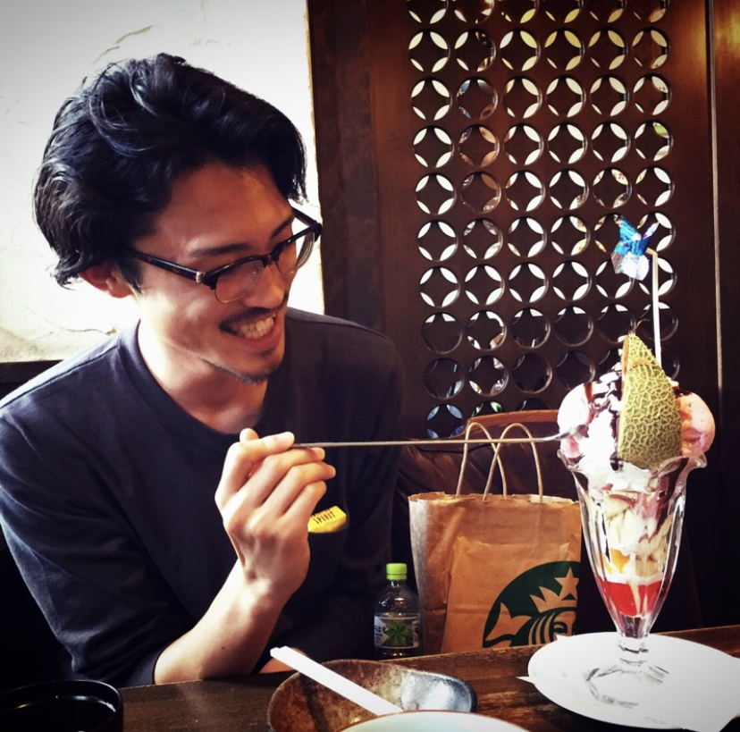

<!DOCTYPE html>
<html lang="ja">
<head>
  <meta charset="utf-8">
  <title>skt-children,inc.【挑戦を応援する集団】</title>
  <link rel="stylesheet" href="css/styles.css">
  <link rel="icon" href="favicon.ico">
  <meta name="viewport" content="width=device-width, initial-scale=1">
</head>
<body>
  <header>
    <div class="container">

      <div class="info">
        <h1>skt-children,inc.</h1>
        <p>避けられないモノは楽しめ</p>
        <a href="#" class="btn">join us</a>
      </div>
      <div class="pic">
        
      </div>
    </div>
  </header>


  <section class="features">
    <h1>Service</h1>

    <div class="container">
      <section>
        <div class="pic">
          
        </div>
        <div class="info">
          <h1>【 アトリエ 】コワーキングスペース事業</h1>
          <p>東京・大阪・福岡・バンクーバー・ニューヨークに好きな奴が自由に集まれる溜まり場を運営しています。<br>就活イベント、ビジネスプランコンテストを開催</p>
        </div>
      </section>
      
      <section>
        <div class="pic">
          
        </div> 
        <div class="info">
          <h1>【 名前募集中 】Webメディア事業</h1>
          <p>アトリエでの日々の”挑戦の軌跡”というたくさんの物語を発信していきます。</p>
        </div>
      </section>
      
      <section>
        <div class="pic">
          
        </div>
        <div class="info">
          <h1>【 酔い冷まし屋 】飲食事業</h1>
          <p>酔いつぶれた人に”ご当地お味噌”と”聞き上手なおばちゃん”が翌日も頑張る元気をくれる新しい夜の居場所です。<br>Sakata（CEO）とAraki（CHO）が日替わり店長してますので是非！</p>
        </div>
      </section>
    </div>
  </section>

  <section class="members">
    <h1>Member</h1>

    <ul>
      <li>
        
        <h2>A.Sakata</h2>
        <h3>好奇心旺盛(27歳)</h3>
        <p>CEO(Chief Exective Officer)</p>
      </li>
      <li>
        
        <h2>M.Araki</h2>
        <h3>縁と運と銀魂が全て(25歳)</h3>
        <p>CHO(chief Human resource Officer)</p>
      </li>
      <li>
        
        <h2>Y.Miyazawa</h2>
        <h3>日課はポエム(26歳)</h3>
        <p>CLO(Chief Legal Officer)</p>
      </li>
      <li>
        
        <h2>D.Yasuda</h2>
        <h3>バファリンを上回る優しさ(27歳)</h3>
        <p>CFO(Chief Financial Officer)</p>
      </li>
      <li>
        
        <h2>H.Fujiwara</h2>
        <h3>愛読書は銀の匙(26歳)</h3>
        <p>CSO(Chief Sustainability Officer)</p>
      </li>
      <li>
        
        <h2>HAMAJI</h2>
        <h3>大切なものは命より筋肉(25歳)</h3>
        <p>CLO(Chief Laerning Officer)</p>
      </li>
      <li>
        
        <h2>UNOchan</h2>
        <h3>生まれはタイランド(25歳)</h3>
        <p>CTO(Chief Thailand Officer)</p>
      </li>
    </ul>
  </section>

  <section class="call-to-action">
    <h1>やりたい事を全部やろう</h1>
    <a href="#" class="btn">Join us</a>
  </section>

  <footer>
    (C) skt-children.com

  </footer>

</body>
</html>
